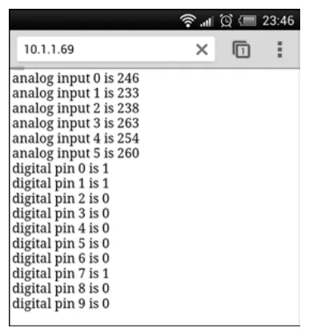

In projects in previous chapters, we gathered data from sensors to measure temperature and light. In this project, you’ll learn how to display those values on a simple web page that you can access from almost any webenabled device. This project will display the values of the analog input pins and the status of digital inputs zero to nine on a simple web page as the basis for a remote-monitoring situation.
Using this framework, you can add sensors with analog and digital outputs such as temperature, light, and switch sensors and then display the sensors’ status on a web page.
The Hardware
Here’s what you’ll need to create this project:
- One USB cable
- One network cable
- One Arduino Uno and Ethernet shield, or one Freetronics EtherTen
The Sketch
Enter the following sketch, but don’t upload it yet:
/* Project 60 – Building a Remote-Monitoring Station
created 18 Dec 2009 by David A. Mellis, modified 9 Apr 2012 by Tom Igoe
modified 20 Mar 2013 by John Boxall
*/
#include <SPI.h>
#include <Ethernet.h>
❶ IPAddress ip( xxx , xxx , xxx , xxx ); // Replace this with your project's IP address
❷ byte mac[] = { 0xDE, 0xAD, 0xBE, 0xEF, 0xFE, 0xED };
EthernetServer server(80);
void setup()
{
// Start the Ethernet connection and server
Ethernet.begin(mac, ip);
server.begin();
for (int z=0; z<10; z++)
{
pinMode(z, INPUT); // set digital pins 0 to 9 to inputs
}
}
void loop()
{
// listen for incoming clients (incoming web page request connections)
EthernetClient client = server.available();
if (client) {
// an http request ends with a blank line
boolean currentLineIsBlank = true;
while (client.connected()) {
if (client.available()) {
char c = client.read();
if (c == '\n' && currentLineIsBlank) {
client.println("HTTP/1.1 200 OK");
client.println("Content-Type: text/html");
client.println("Connection: close");
client.println();
client.println("<!DOCTYPE HTML>");
client.println("<html>");
// add a meta refresh tag, so the browser pulls again every 5 sec:
❸ client.println("<meta http-equiv=\"refresh\" content=\"5\">");
// output the value of each analog input pin onto the web page
for (int analogChannel = 0; analogChannel < 6; analogChannel++) {
int sensorReading = analogRead(analogChannel);
❹ client.print("analog input ");
client.print(analogChannel);
client.print(" is ");
client.print(sensorReading);
client.println("<br />");
}
// output the value of digital pins 0 to 9 onto the web page
for (int digitalChannel = 0; digitalChannel < 10; digitalChannel++)
{
boolean pinStatus = digitalRead(digitalChannel);
client.print("digital pin ");
client.print(digitalChannel);
client.print(" is ");
client.print(pinStatus);
client.println("<br />");
}
client.println("</html>");
break;
}
if (c == '\n') {
// you're starting a new line
currentLineIsBlank = true;
}
else if (c != '\r') {
// you've gotten a character on the current line
currentLineIsBlank = false;
}
}
}
// give the web browser time to receive the data
delay(1);
// close the connection:
client.stop();
}
}We’ll discuss this sketch in more detail a bit later. First, before uploading the sketch, you’ll need to enter an IP address for your Ethernet shield so that it can be found on your local network or modem. You can determine the first three parts of the address by checking your router’s IP address. For example, if your router’s address is 192.168.0.1, change the last digit to something random and different from that of other devices on your network, using a number between 1 and 254 that isn’t already in use on your network. Enter this at ❶ in the sketch, like so:
IPAddress ip(192, 168, 0, 69); // Ethernet shield's IP addressOnce you’ve made that change, save and upload your sketch. Next, insert the Ethernet shield into your Arduino if required, connect the network cable into your router or modem and the Ethernet connector, and power on your Arduino board.

Wait about 20 seconds, and then using a web browser on any device or computer on your network, enter the IP address from ❶. If you see something like Figure 19-3, the framework of your monitoring station is working correctly.
Troubleshooting
If this project doesn’t work for you, try the following:
- Check that the IP address is set correctly in the sketch at ❶.
- Check that the sketch is correct and uploaded to your Arduino.
- Double-check the local network. You might check to see if a connected computer can access the Internet. If so, check that the Arduino board has power and is connected to the router or modem.
- If you’re accessing the project web page from a smartphone, make sure your smartphone is accessing your local Wi-Fi network and not the cell phone company’s cellular network.
- If none of the Ethernet shield’s LEDs are blinking when the Arduino has power and the Ethernet cable is connected to the shield and router or modem, try another patch lead.
How It Works
If and when your monitoring station is working, you can return to the most important parts of the sketch. The code from the beginning until ❸ is required because it activates the Ethernet hardware, loads the necessary libraries, and starts the Ethernet hardware in void setup. Prior to ❸, the client.print statements are where the sketch sets up the web page to allow it to be read by the web browser. From ❸ on, you can use the functions client.print and client.println to display information on the web page as you would with the Serial Monitor. For example, the following code is used to display the first six lines of the web page shown in Figure 19-3.
client.print("analog input ");
client.print(analogChannel);
client.print(" is ");
client.print(sensorReading);At ❹ in the sketch, you see an example of writing text and the contents of a variable to the web page. Here you can use HTML to control the look of your displayed web page, as long as you don’t overtax your Arduino’s memory. In other words, you can use as much HTML code as you like until you reach the maximum sketch size, which is dictated by the amount of memory in your Arduino board. (The sizes for each board type are described in Table 11-2 on page 218.)
One thing to notice is the MAC address that networks can use to detect individual pieces of hardware connected to the network. Each piece of hardware on a network has a unique MAC address, which can be changed by altering one of the hexadecimal values at ❷. If two or more Arduino-based projects are using one network, you must enter a different MAC address for each device at ❷.
Finally, if you want to view your web page from a device that is not connected to your local network, such as a tablet or phone using a cellular connection, then you’ll need to use a technique called port forwarding in your network router or modem, with the public IP set up from an organization such as no-ip (http://www.no-ip.com/) or Dyn (http://dyn.com/dns/). Port forwarding is often unique to the make and model of your router, so do an Internet search for router port forwarding or visit a tutorial site such as http:// www.wikihow.com/Port-Forward/ for more information.
Now that you know how to broadcast text and variables over a web page, let’s use the Arduino to tweet.